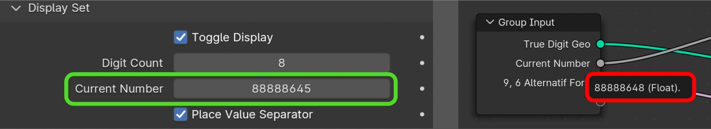
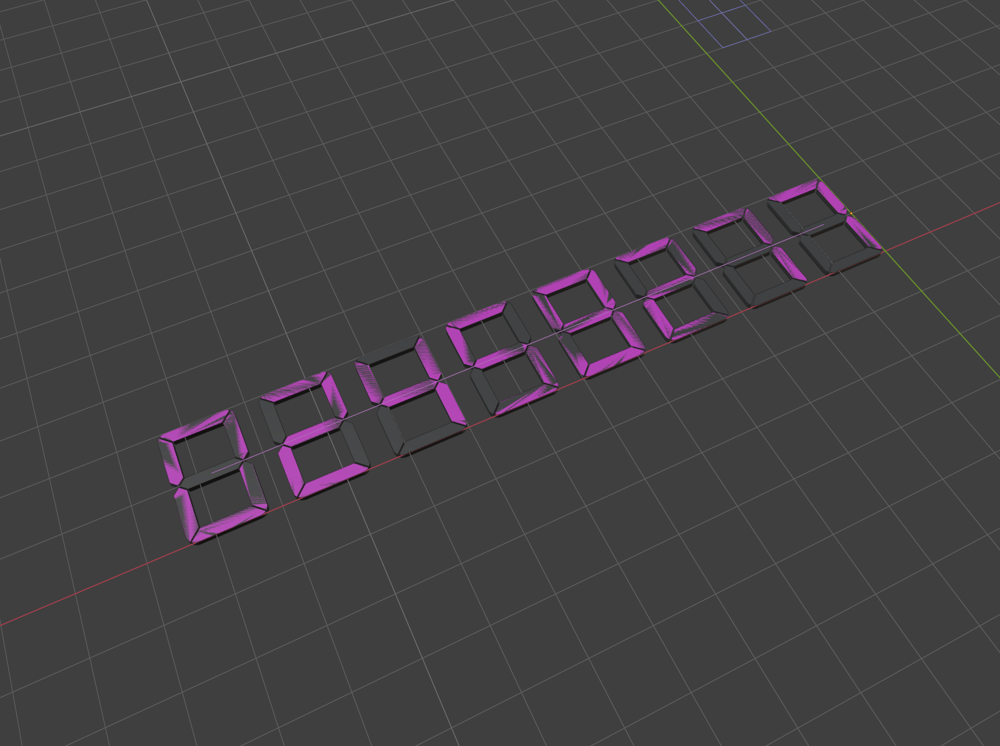
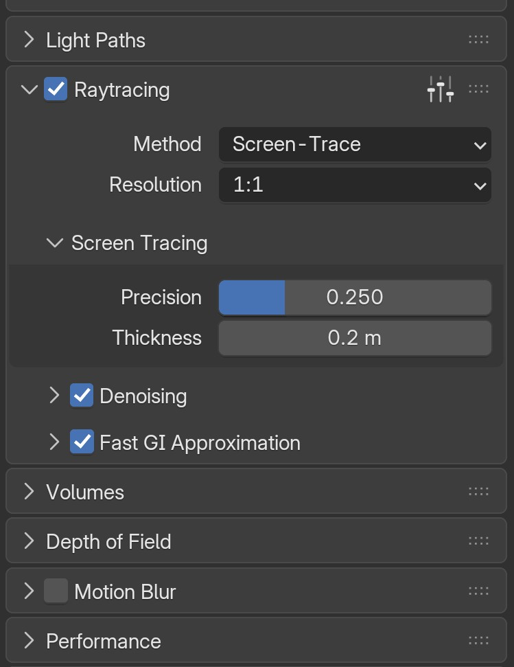

Troubleshooting
The Asset File¶
When you add a segment display object to the scene via the N-Panel interface, the Segment Display asset blend file appears in Outliner > Blender File as linked. No matter how many segment display objects you have in the scene, they all share the same single linked asset data.
Do not delete the linked blend file directly from the Outliner!
Doing so will cause you to lose all your object settings. If you need to clean up your project file, make sure there are no segment display objects remaining in the scene, then use Blender > Purge Unused Data — this will automatically remove the asset file from the current blend file.
If you somehow uninstall the add-on accidentally, all your segment display objects in the scene stays safe. Because the linked asset file is embedded to your current project blend file data library. The object settings stays untouched in the Properties > Modifiers panel as Geometry Nodes setup. If you re-install the add-on, you can continue to work where you left.
Do not open or rename the original asset blend file under any circumstances.
Geometry Nodes features change frequently across Blender versions. Opening the asset file risks accidentally saving it with an incompatible Blender version, which can permanently corrupt it. If your asset file becomes corrupted, you will need to either replace it with a fresh copy or reinstall the add-on.
The Segment Display Object¶
The "Add Segment Display" button in the N-panel interface only appears when you click on an empty space in the 3D scene. The object is always added at the current 3D cursor location.
The N-panel always displays the settings of the active segment display object (the one with the brighter outline, i.e. the last one you clicked). You don't need it to be the only selected object; even if multiple objects are selected, the panel controls whichever segment display is active.
The object settings will only appear if a Segment Display object is active or selected. If any other type of element is selected in the scene, a "Select a Segment Display object" message will be shown instead.
Licensing¶
Segment Display Pro is a commercial add-on. It uses license-key activation, so a valid key is required to unlock the full feature set. See the Activation Page for details.
Numbers¶
Blender uses single-precision floating point (float32) internally. Because of this, the Segment Display add-on cannot produce correct digit results beyond 7 digits, even when using whole integers. If you enter a number with more than 7 digits, expect rounding errors or incorrect segment values.

To work around this, the add-on provides a Complex Number Input option. Instead of typing a large number into a single input field (which Blender would corrupt beyond 7 digits), you enter values into manageable three-digit blocks (0–999) categorized by their place value. This allows the display to safely represent numbers up to the hundred trillions (15 digits) without precision loss. See the Numbers Page for details.
Alphanumeric Preset Animations (Multi-Input)¶
Bypassing Blender's Limits: Because Blender does not natively support the animation of string (text) inputs, the add-on includes a built-in multi-input preset system. See the Alphanumeric Input Page for details.
Time FPS¶
The auto time animations (Clock, Timer) and the Animation Start Offset feature only work correctly with whole-number frame rates (e.g. 24, 25, 30, 60). Decimal frame rates such as 23.98 or 29.97 will produce slightly inaccurate timing results due to mathematical limitations in how Blender calculates frame-to-time conversions.
Make sure the Addon Frame Rate dropdown in the add-on's N-panel settings matches your project's scene frame rate for accurate time synchronization. For more information, see the Settings Page.
Viewport | Solid Color Preview¶

The Solid Viewport Preview feature may not display correctly in certain conditions: With some of the Matcap lighting methods in the 3D Viewport's solid shading mode. If Snap Guides are enabled (this is handled internally with a state toggle).
If your Segment Display object looks glitchy from a distance when Solid Viewport Preview is enabled, increase the Clip Start value (near clipping distance) in the Blender N-Panel View options. The add-on also makes a slight adjustment to the LED Base to prevent this geometry face clipping issue. The temporary LED Base adjustment applies exclusively to the Solid Viewport Preview and will not appear in still image or animation renders.
Blender Terminal Issues¶
"VFont -> Node" Warnings¶
When using the Segment Display add-on, you may occasionally see the following messages in the Blender System Console:
Failed to add relation "VFont -> Node"
Could not find op_from: ComponentKey(VFBfont Regular, GENERIC_DATABLOCK)
These are technical warnings from Blender's Dependency Graph (Depsgraph). They occur when Blender attempts to rebuild the internal connection map between objects and fonts while a script or asset is being reloaded. Because the add-on uses complex, nested Geometry Node groups to generate dynamic text, Blender sometimes tries to link the Font datablock to the node tree before the font has been fully registered.
This is most common when:
- Reloading scripts using F8 or the "Reload Scripts" operator while the add-on is active.
- Reverting or restarting the current Blender project file. Linking or re-importing the display asset from a library.
Should you be worried? No. These messages are non-fatal, purely cosmetic, and do not affect your final output. The fonts referenced in these warnings are only used during the development stage for math, time, and numbering debug purposes. The Segment Display add-on is built entirely using custom meshes and curves, not fonts; it does not rely on these system fonts for the final generated geometry or rendering. Blender's dependency graph recovers automatically once the reload is complete.
To resolve: Simply save and restart Blender, or open a fresh file. Since the add-on's functionality is not affected, you can safely ignore these messages during your workflow.
See the current issue on Blender Developer
EEVEE Render Engine Tips¶
To allow the Segment Display emission to interact with the scene in EEVEE — similar to the Cycles engine — enable the Raytracing option in Properties > Render Properties.

License Deactivation Before Uninstall¶
Always deactivate your license before uninstalling the add-on.
If you remove the add-on without deactivating first, the device will still count toward your activation limit. Unfortunately, Blender's API does not allow add-ons to prevent or intercept the uninstall action, so the add-on cannot warn you or auto-deactivate at that point. If you accidentally uninstall without deactivating, please contact us via our support email so we can manually free up the activation slot for you.
License activation and deactivation both require an internet connection.
Activation validates your license key online, and deactivation contacts the server to free up your activation slot. This ensures your activation count stays accurate and protected. If either fails, make sure "Allow Online Access" is enabled in Blender under Preferences > Network tab.